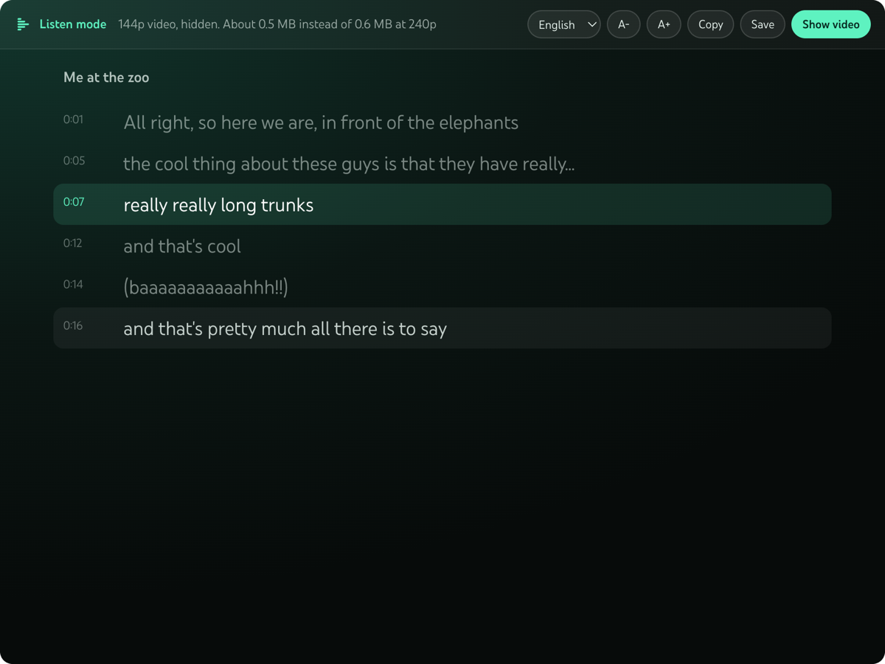

Thinstream is a free extension for Chrome, Firefox and Safari. Press one button and the video drops to 144p and hides. You get the audio and a transcript that follows along.

The video stays at the lowest quality YouTube offers, on every video, until you turn it off.
No blurry frame to stare at. The player becomes a reading view.
The current line is highlighted and scrolls with the audio. Click a line to jump there.
Pick any caption track the video has. Change text size, copy it, or save it as a text file.
The panel tells you roughly how much data this video needs in listen mode and at normal quality.
No account, no server, no tracking, no AI. It uses the captions YouTube already has.
File sizes YouTube lists for one real video, Big Buck Bunny 60fps 4K (10 minutes 35 seconds), read on 2026-11-12. Video plus the standard audio track.
| How you watch | Data for the whole video | Compared with listen mode |
|---|---|---|
| Listen mode (144p, hidden) | about 15 MB | |
| 480p | 36 to 43 MB | 2 to 3 times more |
| 720p | 66 to 97 MB | 4 to 6 times more |
| 1080p 60fps | 134 to 268 MB | 9 to 18 times more |
The saving depends on the video. Calm lectures compress well, so the gap is smaller. It is not true audio only: YouTube's web player no longer offers a separate audio stream, so 144p is the floor.
thinstream-chrome-1.0.1.zip from the latest release and unzip it.chrome://extensions and turn on Developer mode.Works in Chrome, Edge, Brave and Arc. Firefox has its own zip in the same release. For Safari on Mac, build the Xcode project in the repo. Full steps.
| Tool | Price | Lowers data use | Hides video | Synced transcript |
|---|---|---|---|---|
| Thinstream | Free | Yes, holds 144p | Yes | Yes |
| Audio Only Youtube | Free | Aims for audio only | Yes | No |
| Music Mode for YouTube | Free | Lowers quality of hidden videos | Yes | No |
| Vinegar | $1.99 | Has an audio only option | Replaces the player | No |
| Glasp YouTube Summary | Free tier, Pro $15 a month | No | No | Yes, with AI summaries |
| YouTube Show transcript | Free | No | No | Yes |
| YouTube Premium | $15.99 a month | Not stated | Background play | No |
Checked on 2026-11-12 from each tool's own page. Sources and the cases where another tool is the better pick are in the README.
Install Thinstream, open the video and press the Listen mode button in the player. The video drops to 144p and is hidden, and you get the audio with a transcript.
No. YouTube's web player no longer offers a separate audio stream, so 144p is the floor. On the test video the hidden picture was about 5 MB of the 15 MB.
Listen mode still works and the audio keeps playing. The panel tells you there is no transcript.
No.
No. It makes no network requests of its own. Settings stay in your browser.
No. It does not touch ads.
An iPhone and iPad build is in the repo and compiles, but it has not been tested on a device yet. It would only work on youtube.com in Safari, not in the YouTube app.
Yes, for any noncommercial use, under the PolyForm Noncommercial 1.0.0 license. It can't be sold or used to make money.